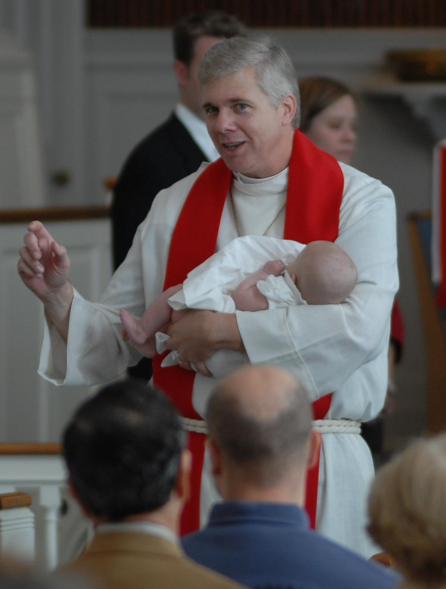

Senior Pastor P. Wayne Zschech

The Reverend P. Wayne Zschech (pronounced Check) has been Senior Pastor at the Lutheran Church of Our Savior since March 1, 2006.
He grew up in Burlington County, NJ with his sister, and graduated Cinnaminson High School in 1982. The Zschechs worshipped regularly at St. John’s Lutheran Church in the Mayfair section of Philadelphia.
Wayne matriculated to Case Western Reserve University in Cleveland with the intention of becoming a doctor, and he earned a Bachelor of Arts in 1986, majoring in both Chemistry and Religion.
He chose to follow God’s call and was accepted into the Lutheran Theological Seminary in Philadelphia the next year. During his four years in the seminary, he served as a chaplain in Hawaii and interned at St. Andrew’s Lutheran Church in Dover, DE, where he met his future wife Kate.
Upon graduation from the seminary, Pastor Wayne and Kate were married and moved to Ohio as Kate was hired by the University of Dayton. Shortly thereafter, Pastor Wayne received his first call as sole pastor of a yoked congregation in Terry, Montana – Hope American Lutheran Church in Fallon and The Community Presbyterian Church in Terry.
In 1993, Pastor Wayne answered the call to serve a large congregation at Emmanuel Lutheran Church in Vienna, VA. One year later, Pastor and Kate were blessed with their daughter, Brigitte (Brie).
When Pastor Raymond Best retired after 38 years at St. Andrew’s in Dover, DE, Pastor Wayne returned as Senior Pastor there in 1997. During his nine years at St. Andrew’s, Pastor Wayne focused on “transformational ministry where discipleship is emphasized over membership and congregants are encouraged and nurtured to develop the Christian faith practices of prayer, worship, study, service, inviting and encouraging others to form a relationship with Christ, and giving generously of the gifts God has provided.’’
When Pastor Louis Dunkle retired in 2005 after serving the Lutheran Church of Our Savior for 17 years, Pastor Wayne was called to be LCOS’ seventh Senior Pastor in 2006.
With Associate Pastor Glenn Englehardt, Pastor Wayne oversees administrative responsibilities as well as ministry areas that include property, evangelism, congregational resources, personnel, youth, worship and music, communications and finances.
Pastor Wayne enjoys skiing, golfing, watching movies and home improvement projects. He, Kate and Brie live in the parsonage adjacent to the church.
“My vision for every congregation I serve is to equip the saints for the gospel ministry we’ve been called to proclaim in word and deed from the waters of baptism as Christ’s disciples,’’ Pastor Wayne said.